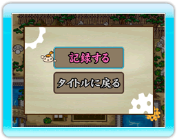
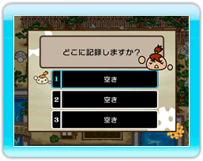
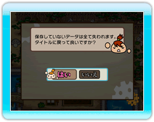
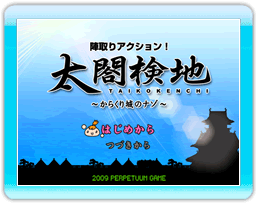

13 |
ゲームの終了と再開 |
 |

エリアマップで－ボタンをおすと、システムメニューが開きます。 |
||||||||||

記録を最大3つまで保存することができます。記録すると、次回のゲーム開始時、つづきから遊ぶことができます。 1ボタンを押すと前画面に戻ります。 |
||||||||||

「タイトルに戻る」を選ぶと、警告メッセージが表示されます。
「はい」を選んで2ボタンを押すとタイトル画面に戻ります。保存していないデータは全て失われます。
「いいえ」を選んで2ボタンを押すと前画面に戻ります。（1ボタンを押した場合も同様です。） |
||||||||||

タイトル画面で「つづきから」を選んで2ボタンを押すと、保存されている記録の一覧が表示されます。 十字ボタンで記録を選んで2ボタンを押すと、記録が作成された時点からゲームを再開します。 |
 |
 |
 |